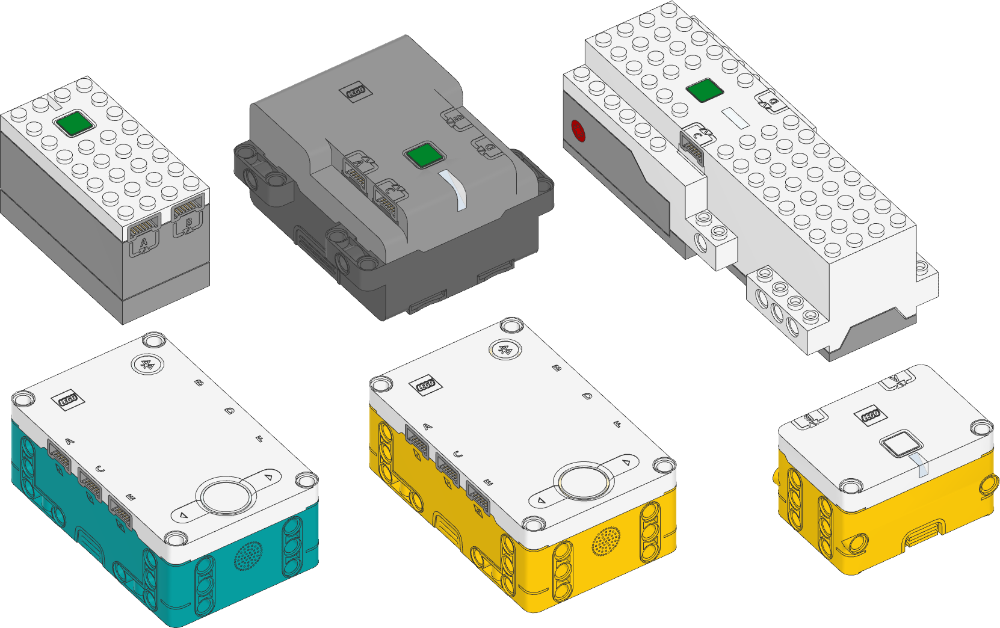
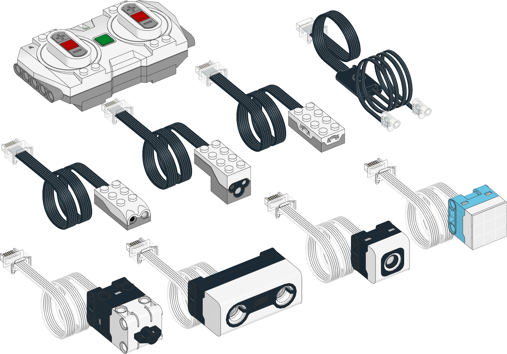
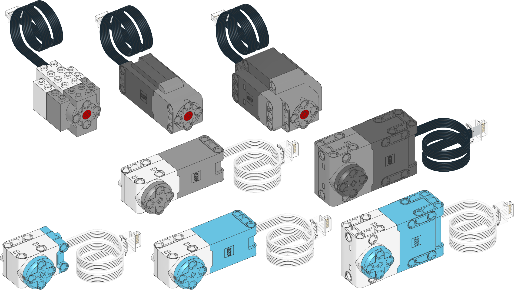
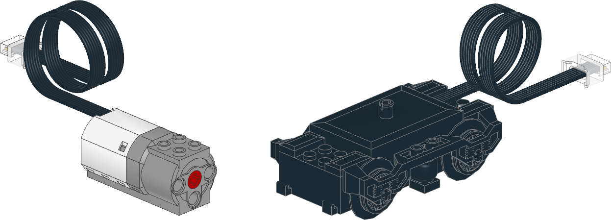
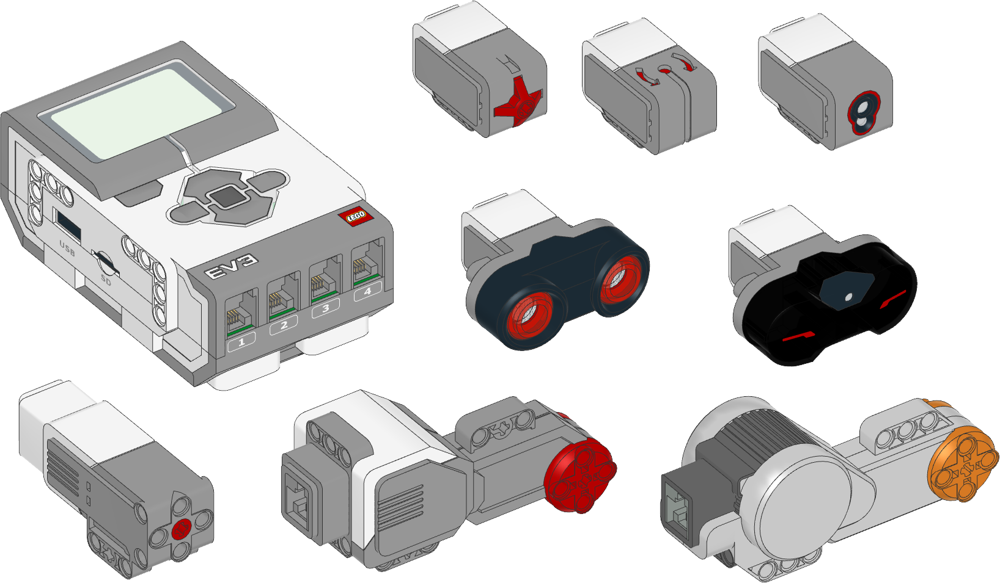

Pybricks ドキュメント
Pybricks は、LEGO® Hub用のPython実行環境です。 MicroPythonを実行するHubに接続し、モーターとセンサーを制御します。
Pybricksは、LEGO® BOOST、City、Technic、MINDSTORMS®、SPIKE®上で実行できます。 ブラウザがあればどこでもコーディングできます。
Note
ここはPybricksのコーディングに関するドキュメントです。 Pybricksについて詳しく学ぶなら PybricksのWebサイト を参照してください。
Note
LEGO MINDSTORMS EV3を使っている場合は、 EV3 documentation を参照してください。
このドキュメントではSPIKE Primeに限定して日本語化しています。
以下のデバイスをクリックすると、そのドキュメントに移動します。 左側のメニューで、Pybricksのモジュールや関数を探すこともできます。 ☰をクリックして、メニューを開く必要がある場合があります。
Hub一覧

モーターとセンサー



EV3のモーターとセンサー
